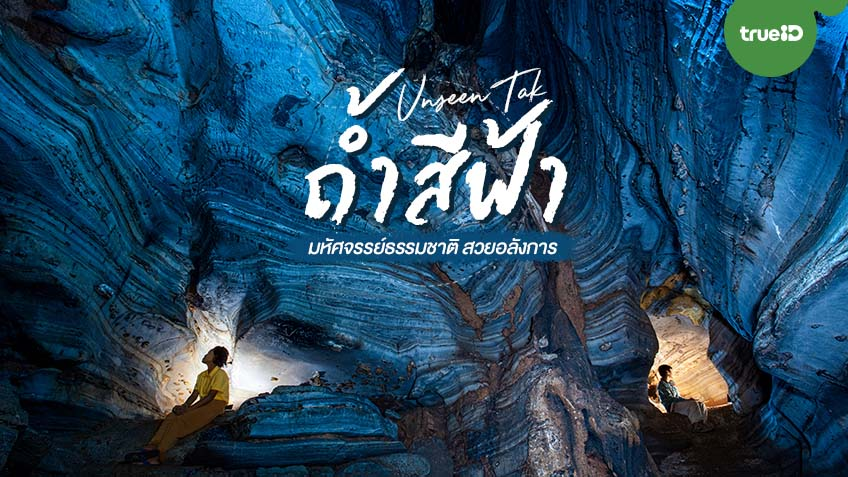

ถ้ำสีฟ้า
ถ้ำสีฟ้า แลนด์มาร์คสุดอันซีนที่ ตำบลแม่กุ อำเภอแม่สอด กันค่ะ ใครจะไปคาดคิดว่าบนโลกนี้จะมีถ้ำที่มีผนังหินสีฟ้า
ถ้ำสีฟ้า แลนด์มาร์คสุดอันซีนที่ ตำบลแม่กุ อำเภอแม่สอด กันค่ะ ใครจะไปคาดคิดว่าบนโลกนี้จะมีถ้ำที่มีผนังหินสีฟ้า
ดอยมะม่วงสามหมื่น สถานที่ชมทะเลหมอกแสนสวยที่ต้องเดินลุยป่าและขึ้นเขาโดยใช้เวลา 4-5 ชั่วโมง
สายฟิตต้องมาทางนี้เลยค่ะ เพราะ เลอกวาเดาะ เป็นหนึ่งในเขาวัดใจที่คนรักการปีนเขาต้องไปพิชิตสักครั้ง